FullStack
Fest
/usr/bin/whoami ?
Luis Montes
 @MONTESLU
@MONTESLU 
@InternetOfS***
IoT
- Embedded hardware platforms
- Mobile devices
- Bi-Directional communication.
Sep 7, 2010
node-serialport
over 100 contributors
data transports
// read
port.on('data', (data) => {
// aww yiss
});
// write
port.write([0xF9, 249, 0b11111001]);
NodeBots
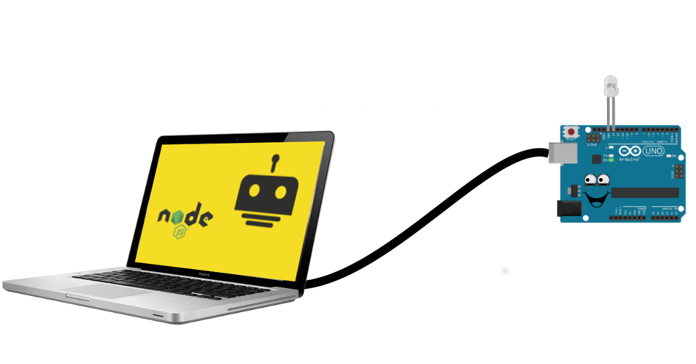NodeBots
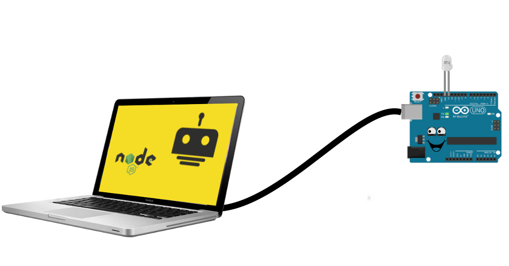NodeBots
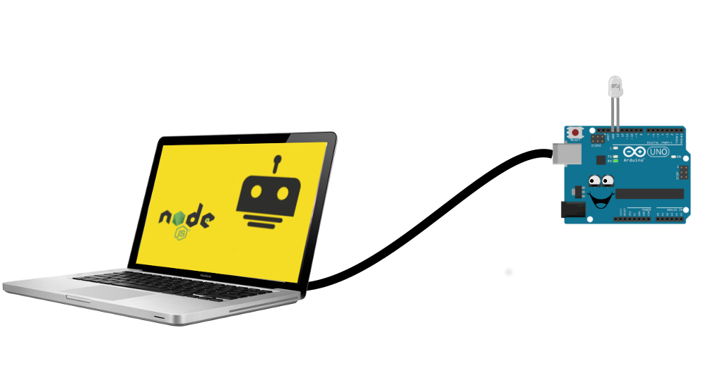NodeBots
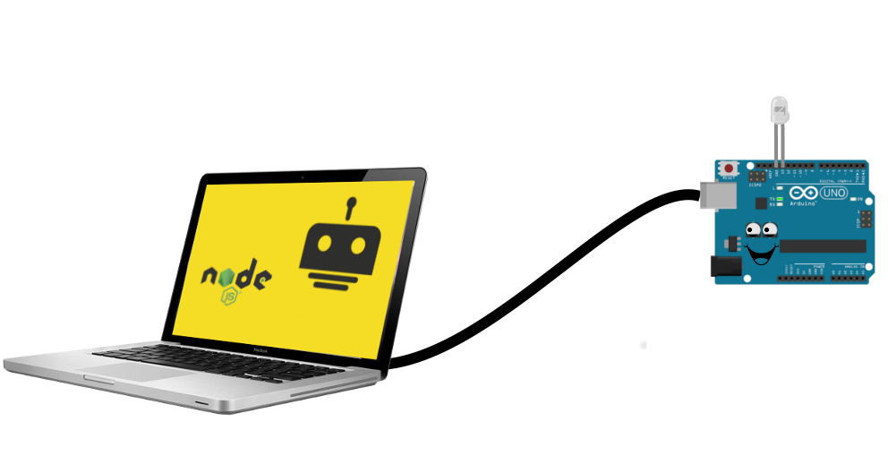NodeBots
NodeBots
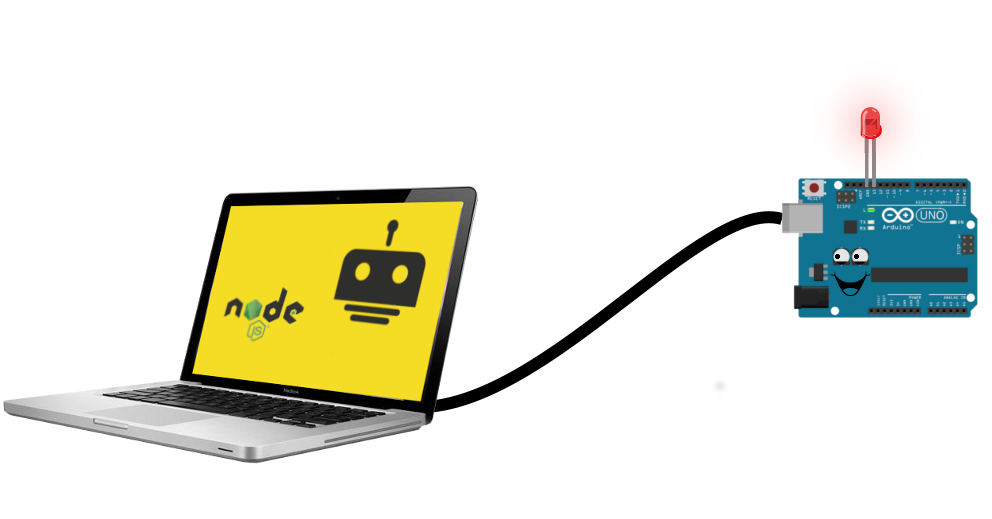Mar 30, 2012 - Johnny-Five
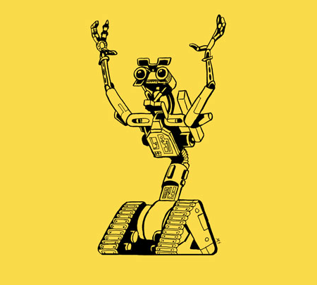over 100 contributors
johnny-five
const five = require("johnny-five");
const board = new five.Board();
board.on("ready", () => {
const led = new five.Led(13);
led.blink(500);
});
Sensors, Servos, LCDs...
April 29, 2014: IO Classes
Tessel, CHIP, Blend Micro, Raspberry Pi, BeagleBone...
Web to Nodebots...
- HTTP/REST
- EventSource
- Socket.io
- MQTT
Progressive Web Apps
- Instant loading / Work offline - Service Workers
- Add to homescreen - manifest.json
- Push Notifications
- Fast
- Secure
- Responsive
Web RTC
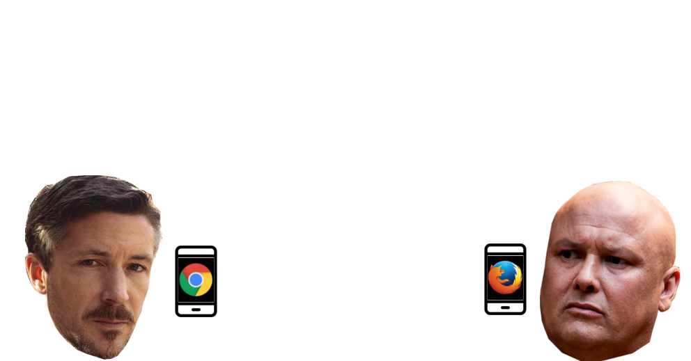Web RTC
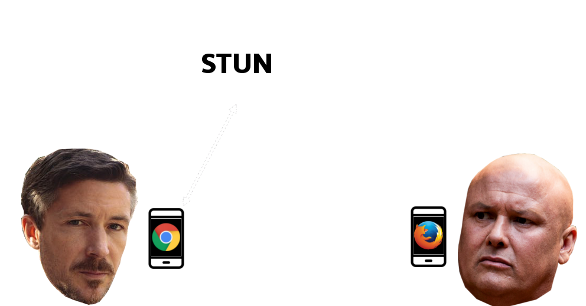Web RTC
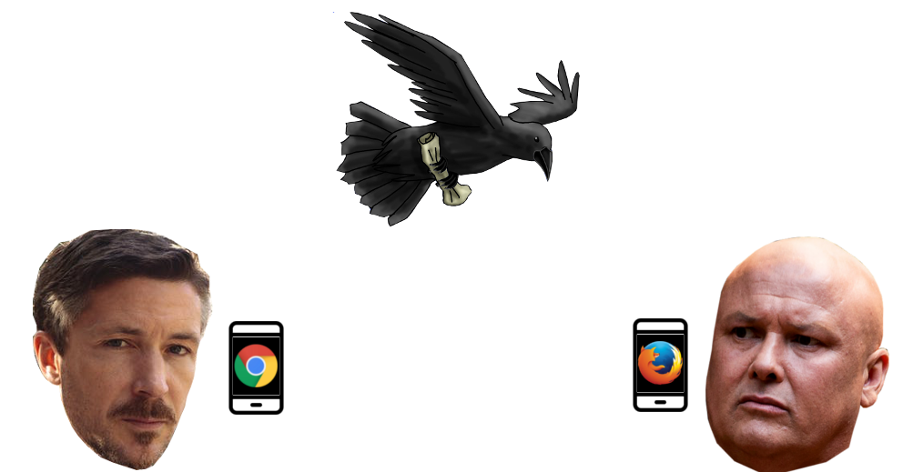Web RTC
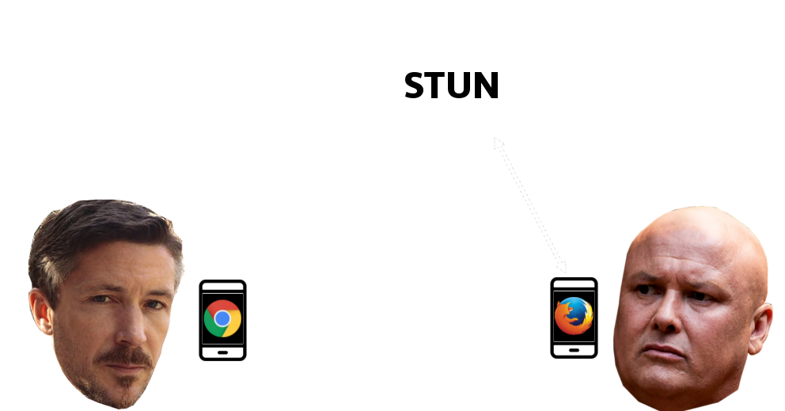Web RTC
PeerConnection DataChannel !
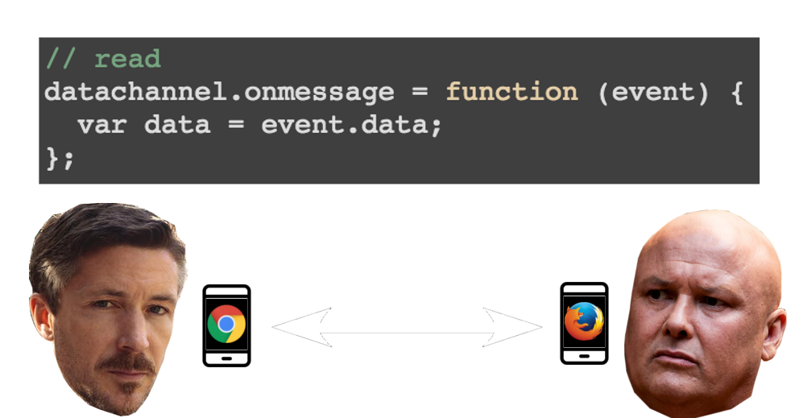PeerConnection DataChannel !
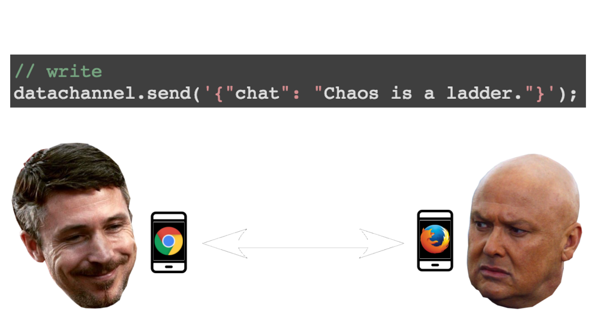Webpack, Browserify?
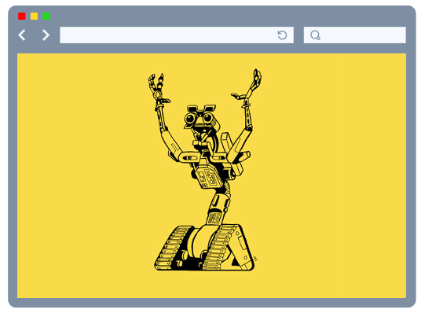You might not need
Electron, Phonegap, Cordova, Ionic, React-native, Objective C, Swift, Java, Kotlin...
Web MIDI ?

Arduino MIDI
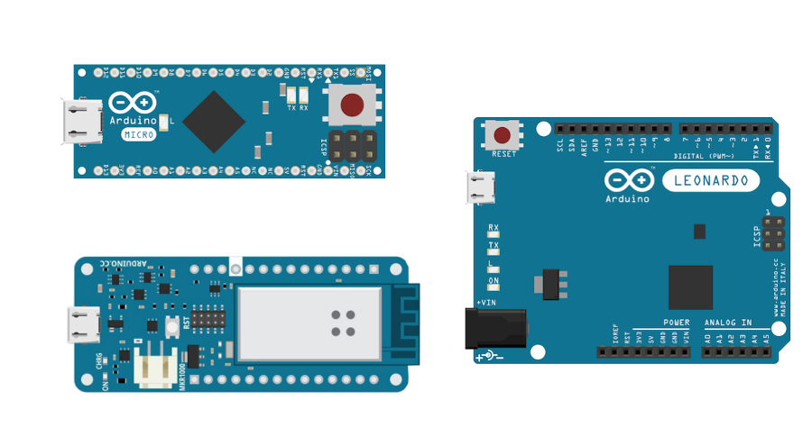MIDI protocol
command, key, velocity[144-207, 0-127, 0-127]
6 bits, 7 bits, 7 bits = 20 bits!
MIDI API
// read
input.onmidimessage = function(message) {
var data = message.data;
};
// write
output.send([144, 20, 60]);
Web USB ?

Web USB Security
- The URLs must be HTTPS (or localhost for dev).
- User interaction prompted via a browser dialog.
- Dialog only on a DOM event (button click).
Firmware must specify allowed URLs.
// read
let readLoop = () => {
device.transferIn(5, 64).then(result => {
var data = result.data;
readLoop();
}, handleError);
};
// write
device.transferOut(4, [241, 15, 127]);
Bluetooth
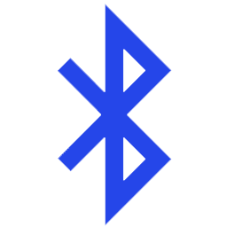- audio pairing?
- beacons?
Physical Web

Bluetooth Low Energy (BLE)

ble-serial -> Arduino
Web Bluetooth
- In Chrome 56 stable!
- Use Noble
// read
characteristic.on('data', callback(data, isNotification));
// write
characteristic.write([241, 15, 127], withoutResponse);
Near Field Communications (Web NFC)

Web NFC Push
navigator.nfc.push(
'hello world'
).then(() => {
console.log("Message pushed.");
}).catch((error) => {
console.log("Push failed :-( try again.");
});
Web NFC Watch
navigator.nfc.watch((message) => {
// do something with the message
}).then(() => {
console.log("Added a watch.");
}).catch((error) => {
console.log("Adding watch failed: " + error.name);
});
Demo Time!
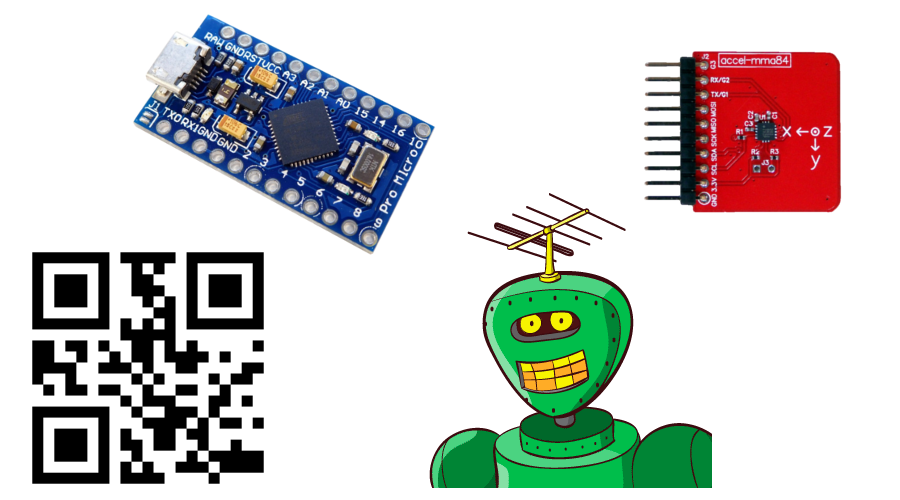demo setup
more demo setup
renderer = new THREE.WebGLRenderer({
canvas: canvas,
alpha: true
});
renderer.setClearColor( 0x000000, 0);
MOAR demo setup
// in a web worker
if('BarcodeDetector' in self) {
const barcodeDetector = new BarcodeDetector();
barcodeDetector.detect(imageData)
.then(barcodes => {
// post back up to DOM
});
}